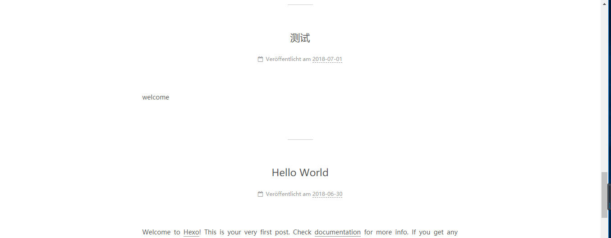

闲来无事，忽然想搭个博客，使用hexo搭建博客和将其发布到github上时，遇到了一些坑，从一个小白的角度来总结一下。
在之前的安装中我没有遇到什么问题，等到要同步到github上，使用hexo g -d命令时，出现了Deployer not found: git错误，总结下来有以下几个原因：
一、最常见的问题，关于_config.yml配置文件参数的书写，我们需要配置的一般来说是 “deploy：” 下面的参数，例如type，repo，branch等，由于_config.yml有严格的书写要求，故有许多该注意的事项：
1、deploy下面的每个子项，例如type等，需要缩进两个字符。
2、hexo3.0以上版本需要将type参数的github改为git。
3、将repository换成repo。
4、冒号后面要留有一个空格（重要）。
二、若配置文件没有问题，那么就是你的deployer没有安装成功，你需要执行如下命令再安装一次：npm install hexo-deployer-git –save
三、我在搭建的时候，前两项都没有问题但还是通不过，后来将github的用户名和项目名称的大写字母修改掉就通过了，所以建议大家的库名和用户名最好不要有大写字母。
剩下的就都很简单啦，搭建成功！下图是搭建好的博客：
